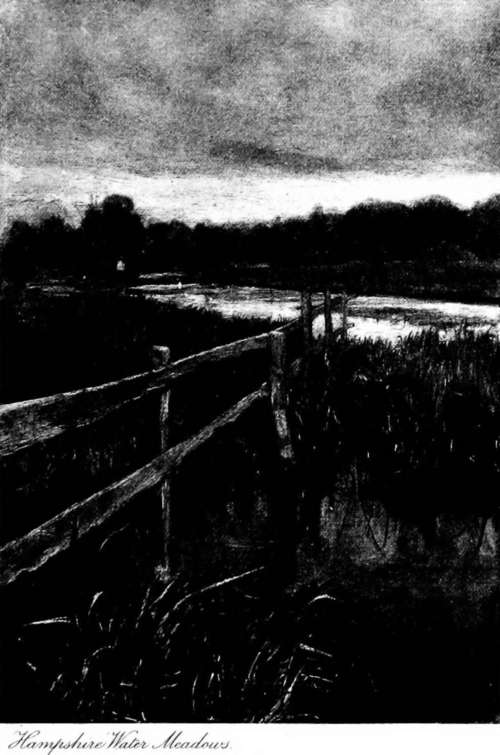

Chapter II. Dry, Fly Fishing
Description
This section is from the book "Fly Fishing", by Sir Edward Grey. Also available from Amazon: Fly Fishing.
Chapter II. Dry, Fly Fishing
IT is with much diffidence that any attempt can be made to describe the delights of dry fly fishing. Those who know and practise the art best are the epicures amongst anglers; they have carried both the skill and pleasure of angling to a height of exquisite refinement, and to them I fear that any detailed account of a day's dry fly fishing must seem inadequate. There are, however, other less fortunate anglers whom circumstances have prevented from becoming acquainted with the use of the dry fly on those rivers which are most perfectly suited for it, and as these anglers are not only many in number, but are probably a very large majority of anglers, I will endeavour to describe some of the days, the events, the places, the rivers, the seasons, which are to me typical of dry fly angling, in the hope of finding readers to whom these things are not already too familiar. If the written words can convey to them even a little of what dry fly angling means to us on the Test and the Itchen, of the affection we feel for these rivers and their water meadows, my object will be gained and my hope fulfilled. First, let us take the season. Every season has its claim upon the attention of men whose recreations are in the country and in open air, but in the case of the dry fly angler this claim is paramount, for the season which is the very best for the use of the dry fly is also the very best of the whole year. It consists of the months of May and Tune, when Nature does her utmost on a scale that is magnificent, and with a variety that seems infinite, to persuade us that we live in a beautiful world. The extent to which this appeal, which Nature makes to us, is admitted or felt by different persons, varies within very wide limits. A large number of people leave their homes, and make considerable pecuniary sacrifices, in order apparently to spend the best part of the spring and early summer in London and out of the country. There are others, on the contrary, to whom it is a calamity to be shut up in a town for the whole of the months of May and June; and whom no purely self-regarding misfortune, except perhaps the complete loss of liberty or of health, could make more wretched than this. It is, however, not only the season of the year, but the places for dry fly angling, that add to the attractions of the sport. It would be arrogant to say that the valleys of the Test and Itchen are better than any other part of the country in May and June, but I do say that no part is better than they are. The angler who is fishing in one of these rivers at this time of year, is seeing the most beautiful season at its best. This is the time of blossom and promise, everywhere there should be visible growth responding to increasing warmth, a sense of luxuriant and abundant young life all around us. All this is assured every year in the valleys of such rivers as the Test and the Itchen. There may be, and too often is, a spring drought in other countries, and on the great downs of Hampshire itself. Other rivers may shrink, and leave their banks dry, but the Hampshire chalk streams run brim full,1 and their valleys are all of water meadows, intersected by streams and runnels and channels and cuts of all sorts and sizes carrying over the land the bounty of water. Hence it is, that on the way to our river we have no thought of what order it will be in, or of what rain there has been lately. The river is sure to be found full and clear. North country rivers are fed by constant tributaries. Down every glen comes a burn, and after heavy rain there is a rush of surface water, which swells them all. A true chalk stream has few tributaries. The valleys on the higher ground near it have no streams; the rain falls upon the great expanse of high exposed downs, and sinks silently into the chalk, till somewhere in a large low valley it rises in constant springs, and a full river starts from them towards the sea. There is always something mysterious to me in looking at these rivers, so little affected by the weather of the moment, fed continually by secret springs, flowing with a sort of swiftness, but for the most part (except close to mills and large hatches) silently, and with water which looks too pure and clear for that of a river of common life.
1 Undoubtedly this is generally the case, but an exception must be made in regard to the angling season of 1898. The upper Test, for instance, was far lower in April 1898 than in the June of the preceding year, when it was gloriously full. —Eds.
And now let the season be somewhere about the middle of May, and let there be a holiday, and the angler be at the Test or the Itchen, and let us consider a day's fishing, which shall be typical of many days in this month. The wind shall be south-west, a perceptible breeze, but with no squalls or rough manners; and there shall be light clouds moving before it, between which gleams of sunshine fall upon the young leaves and woods—for there are many fine woods by the sides of water meadows. Granted these first two conditions, it will follow that the day is warm, with a temperature reaching 620 in the shade, the mean temperature for midsummer, but a very suitable maximum for a day in May. It is almost certain that there will be a rise of trout at some time during the day, and it is all important to know at what hour it will begin. The chances in my experience are something as follows: It is not certain that there will be no rise before ten o'clock, but it is very improbable that there will be any. After ten o'clock the rise may begin at any time. The most likely time for it is between eleven and twelve, but there need be no disappointment if it does not begin till twelve o'clock. On a day such as this I do, however, become anxious if at one o'clock there is still no rise. Taking then these chances into consideration, desiring earnestly not to miss a minute of the rise, and leaving a fair margin for uncertainties, the angler will probably be at the water by 9.30.
Continue to: